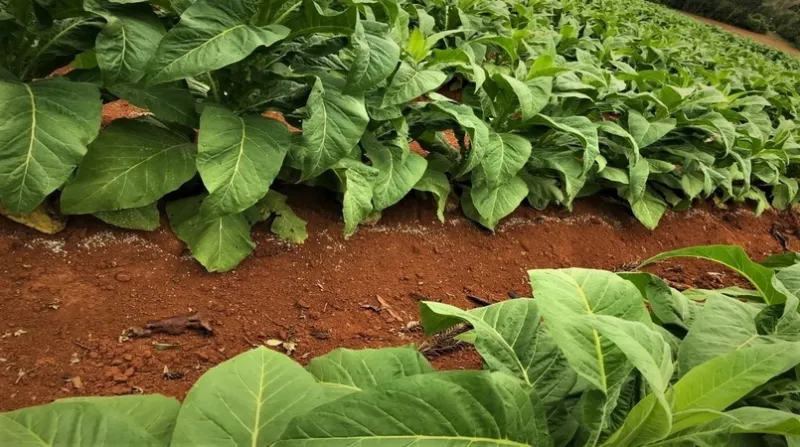
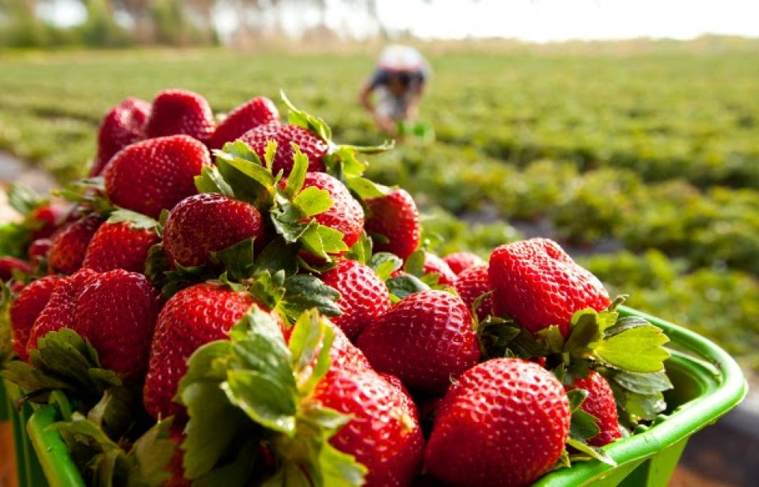

Informações
A agricultura familiar é muito importante para a que as pessoas tenhão segurança alimentar, eles em suma maioria são tecnecas
sustentaves e preservão culturas. apesar de de recurssos limitados, eles desenvolvem economicamente
locais e reduzem a pobresa, alcilios sõa nescesarios para fortalecer
esta pratica que é tão boa para terra.

Plantar fumo requer cuidado e atenção a diversos detalhes. Aqui está um guia básico passo a passo para o cultivo:
Passo 1: Escolha do Local e Preparação do Solo
Escolha do Local: Opte por um local ensolarado, com pelo menos 6 horas de luz solar direta por dia.
Preparação do Solo:
O solo deve ser bem drenado e rico em nutrientes.
Faça a análise do solo para ajustar o pH, que deve estar entre 6,0 e 6,5.
Remova pedras, ervas daninhas e detritos do solo.
Passo 2: Seleção das Sementes e Germinação
Escolha das Sementes: Adquira sementes de tabaco de uma fonte confiável.
Germinação:
Comece a germinação dentro de casa, cerca de 6-8 semanas antes da última geada esperada.
Plante as sementes em um substrato leve e mantenha a temperatura em torno de 20-25°C.
Mantenha o solo úmido e cubra as sementes com uma fina camada de solo.
Passo 3: Transplante das Mudas
Preparação das Mudas:
Quando as mudas tiverem 15-20 cm de altura e pelo menos 4 folhas verdadeiras, estão prontas para o transplante.
Endureça as mudas gradualmente expondo-as ao ar livre por períodos crescentes de tempo.
Plantio no Solo:
Prepare o solo no local definitivo, fazendo covas espaçadas cerca de 45 cm entre si.
Coloque as mudas com cuidado, mantendo a profundidade de plantio similar à que tinham no vaso.
Passo 4: Cuidados Pós-Plantio
Irrigação: Mantenha o solo úmido, mas evite encharcamentos.
Controle de Ervas Daninhas: Remova as plantas indesejadas regularmente para evitar competição por nutrientes.
Adubação: Fertilize as plantas regularmente com um adubo balanceado, seguindo as recomendações específicas para tabaco.
Passo 5: Colheita e Cura
Colheita:
Quando as folhas inferiores começarem a amarelar, é hora de colher.
Corte as folhas da planta e deixe-as secar por algumas horas à sombra.
Cura:
Pendure as folhas em um local seco e bem ventilado por várias semanas.
Durante esse período, as folhas devem perder a umidade até atingirem o teor adequado para o fumo.
Passo 6: Armazenamento
Armazenamento das Folhas Cura:
Após a cura, armazene as folhas em recipientes herméticos, protegendo-as da umidade e da luz direta.

Plantar morangos pode ser muito gratificante, especialmente quando você pode desfrutar dos
frutos frescos diretamente do seu jardim. Aqui está um guia passo a passo para ajudar você a plantar morangos:
Passo 1: Escolha das Variedades e Preparação do Solo
Escolha das Variedades: Existem diversas variedades de morangos, algumas mais adequadas para climas frios, outras para
climas mais quentes. Escolha aquela que melhor se adapte ao seu clima e preferências.
Preparação do Solo:
Morangos preferem solos bem drenados, ricos em matéria orgânica e ligeiramente ácidos (pH entre 5,5 e 6,8).
Antes de plantar, prepare o solo removendo ervas daninhas, pedras e outros detritos.
Adicione composto orgânico ou adubo bem decomposto para enriquecer o solo.
Passo 2: Plantio das Mudas
Escolha das Mudas: Você pode plantar morangos a partir de mudas compradas ou multiplicando as mudas de plantas existentes.
Época de Plantio:
O ideal é plantar as mudas no final do inverno ou início da primavera, quando o solo estiver começando a aquecer.
Espaçamento e Profundidade:
Plante as mudas em fileiras, deixando um espaçamento de aproximadamente 30-40 cm entre as plantas.
Enterre as mudas de forma que a coroa (parte superior da planta onde as folhas se encontram) fique nivelada com a superfície do solo.
Passo 3: Cuidados Pós-Plantio
Irrigação:
Mantenha o solo uniformemente úmido, especialmente durante períodos secos e quentes.
Evite molhar as folhas diretamente para prevenir doenças.
Adubação:
Aplique um fertilizante balanceado, conforme as recomendações da embalagem, cerca de uma vez por mês durante a temporada de crescimento.
Controle de Ervas Daninhas:
Remova regularmente as ervas daninhas que possam competir por nutrientes e água.
Passo 4: Manejo das Plantas
Desbaste das Flores:
Durante o primeiro ano, remova as flores formadas nas mudas para que elas possam se desenvolver melhor e produzir mais no próximo ano.
Renovação das Plantas:
Após a colheita, remova as folhas velhas e mortas para promover o crescimento de novos estolhos (ramos que produzem novas plantas).
Passo 5: Colheita e Cuidados Finais
Colheita:
Os morangos estarão prontos para colher quando estiverem completamente vermelhos e maduros.
Colha os morangos com cuidado para não danificar as plantas.
Proteção Contra Pragas e Doenças:
Passo 1: Escolha das Hortaliças e Planejamento do Plantio
Escolha das Hortaliças: Decida quais hortaliças você deseja plantar. Escolha variedades que se adaptem ao seu clima e espaço disponível. Algumas opções populares incluem alface, tomate, cenoura, pimentão, rúcula, espinafre, entre outras.
Planejamento do Plantio:
Considere a época do ano e as condições climáticas ideais para cada tipo de hortaliça.
Planeje onde cada planta será colocada no seu jardim ou canteiro, levando em conta o espaçamento recomendado entre as plantas e a necessidade de luz solar.
Passo 2: Preparação do Solo
Escolha do Local:
Selecione um local ensolarado para a maioria das hortaliças. Algumas podem tolerar sombra parcial, mas a maioria precisa de pelo menos 6 horas de luz solar direta por dia.
Preparação do Solo:
Remova ervas daninhas, pedras e detritos do solo.
Revolva o solo até uma profundidade de cerca de 20-30 cm.
Adicione matéria orgânica, como composto ou esterco bem decomposto, para enriquecer o solo com nutrientes.
Passo 3: Plantio das Hortaliças
Plantio das Sementes ou Mudas:
Sementes: Siga as instruções da embalagem quanto à profundidade de plantio e espaçamento entre as sementes. Mantenha o solo úmido até as sementes germinarem.
Mudas: Transplante as mudas para o solo de acordo com o espaçamento recomendado para cada tipo de hortaliça.
Cuidados Iniciais:
Regue as plantas regularmente, mantendo o solo úmido, mas não encharcado.
Proteja as mudas recém-transplantadas do sol direto durante os primeiros dias.
Passo 4: Cuidados Contínuos
Irrigação:
Mantenha um calendário regular de irrigação, ajustando a frequência de acordo com as condições climáticas. Hortaliças geralmente precisam de água regular para um crescimento saudável.
Adubação:
Fertilize as plantas conforme necessário, utilizando um fertilizante equilibrado ou orgânico. Siga as recomendações específicas para cada tipo de hortaliça.
Controle de Ervas Daninhas:
Remova regularmente as ervas daninhas que competem por nutrientes com as suas hortaliças.
Proteção contra Pragas e Doenças:
Monitore as plantas regularmente em busca de sinais de pragas e doenças. Use métodos de controle adequados, como o uso de inseticidas naturais ou orgânicos, se necessário.
Passo 5: Colheita e Manutenção
Colheita:
Colha as hortaliças quando estiverem maduras e prontas para consumo. Isso pode variar dependendo do tipo de hortaliça.
Manutenção Pós-Colheita:
Remova plantas velhas e substitua-as por novas se estiverem em um ciclo de plantio contínuo.
Continue a cuidar do solo adicionando matéria orgânica regularmente para manter a fertilidade.
Seguindo esses passos básicos, você poderá plantar hortaliças com sucesso em seu jardim ou canteiro. Lembre-se de ajustar as práticas de cultivo conforme necessário para atender às necessidades específicas das hortaliças que você escolheu plantar e aproveite os alimentos frescos cultivados em casa!
. Considere verificar informações importantes.
lantar milho pode ser uma experiência gratificante, especialmente se você tiver espaço suficiente para cultivá-lo. Aqui está um guia passo a passo para plantar milho:
Passo 1: Escolha das Sementes e Preparação do Solo
Escolha das Sementes:
Escolha variedades de milho adequadas ao seu clima e espaço disponível. Existem diferentes tipos de milho, como doce, duro e pipoca. Verifique as características de cada variedade antes de escolher.
Preparação do Solo:
O milho cresce melhor em solos bem drenados e ricos em matéria orgânica.
Prepare o solo revolvendo-o até uma profundidade de aproximadamente 20-30 cm.
Adicione composto ou esterco bem decomposto para melhorar a fertilidade do solo.
Passo 2: Plantio das Sementes
Época de Plantio:
O milho é sensível ao frio e deve ser plantado após a última geada, quando o solo estiver aquecido. Isso geralmente é na primavera.
Espaçamento e Profundidade:
Plante as sementes em fileiras espaçadas cerca de 60-90 cm uma da outra.
Coloque as sementes a uma profundidade de aproximadamente 3-5 cm no solo.
Configuração das Fileiras:
As fileiras de milho geralmente são plantadas de forma que as plantas fiquem espaçadas entre si por cerca de 20-30 cm.
Passo 3: Cuidados Pós-Plantio
Irrigação:
Mantenha o solo uniformemente úmido durante o período de crescimento, especialmente durante a formação das espigas.
Evite períodos de seca prolongada, pois isso pode afetar negativamente a produção de milho.
Adubação:
O milho é um cultivo exigente em nutrientes, portanto, aplique fertilizante rico em nitrogênio antes do plantio e novamente quando as plantas atingirem cerca de 30 cm de altura.
Controle de Ervas Daninhas:
Remova as ervas daninhas regularmente para evitar que concorram com o milho por nutrientes e água.
Passo 4: Polinização e Fertilização
Polinização:
O milho é polinizado pelo vento. Para garantir uma boa polinização, plante as fileiras em blocos de pelo menos 4 fileiras de largura, em vez de uma única fileira longa.
Fertilização Cruzada:
Para garantir a fertilização cruzada entre as plantas, plante pelo menos duas fileiras de milho para promover a transferência de pólen entre elas.
Passo 5: Colheita
Determinação da Maturidade:
O milho doce é colhido quando as espigas estão completamente formadas, com grãos suculentos e leitosos.
O milho duro (para grãos secos) é colhido quando os grãos estão duros e secos.
Colheita:
Segure a espiga com uma mão e dobre o caule da planta com a outra para colher. O milho doce deve ser consumido o mais rápido possível após a colheita para manter sua doçura.